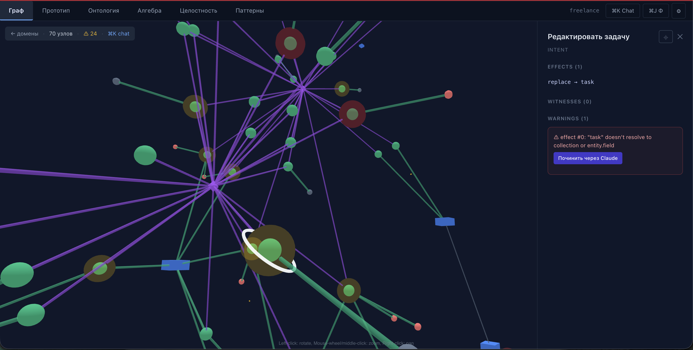
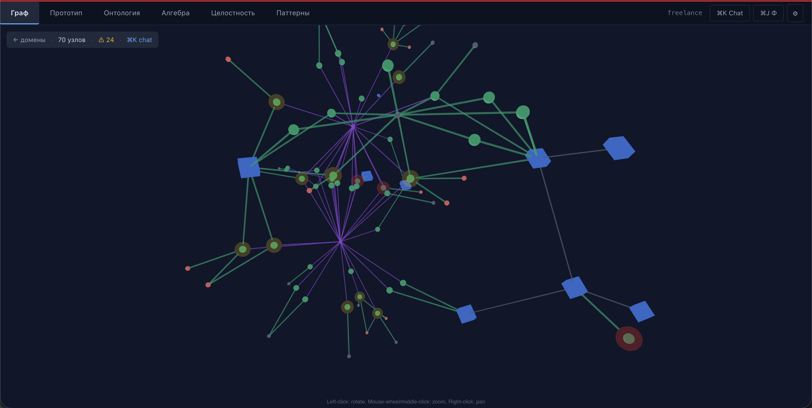
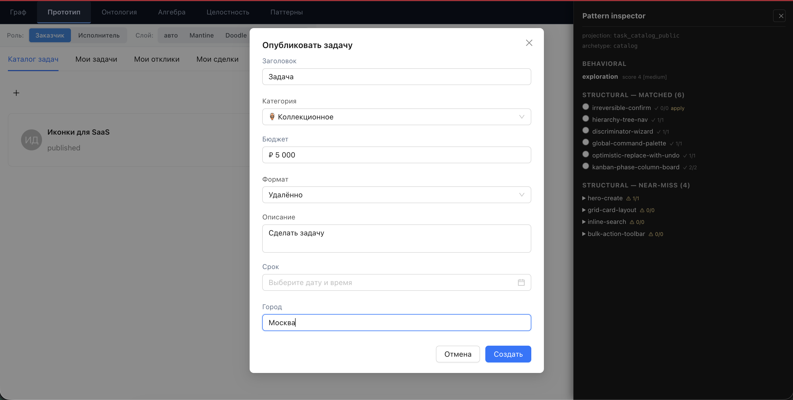
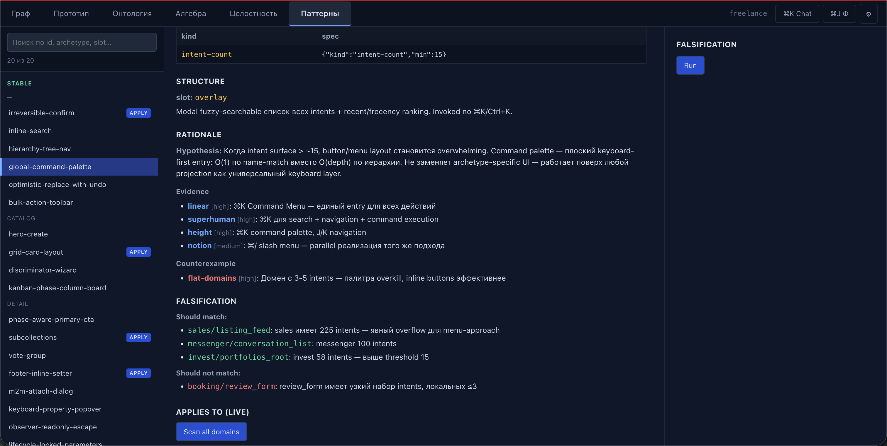
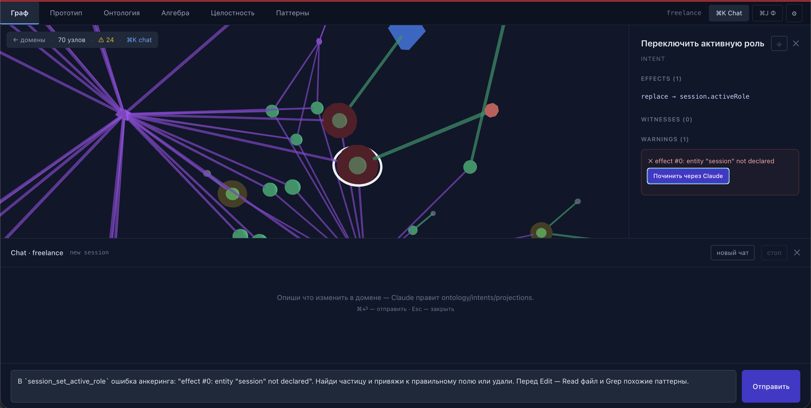
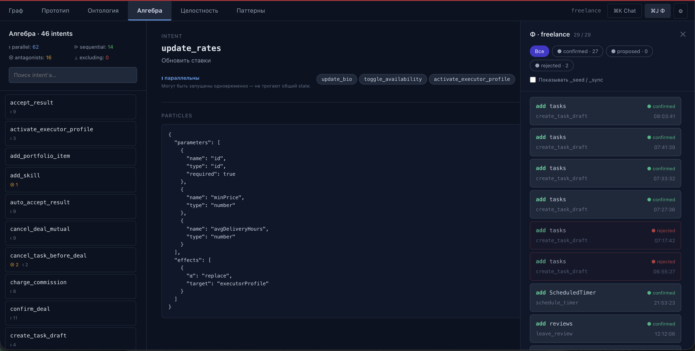
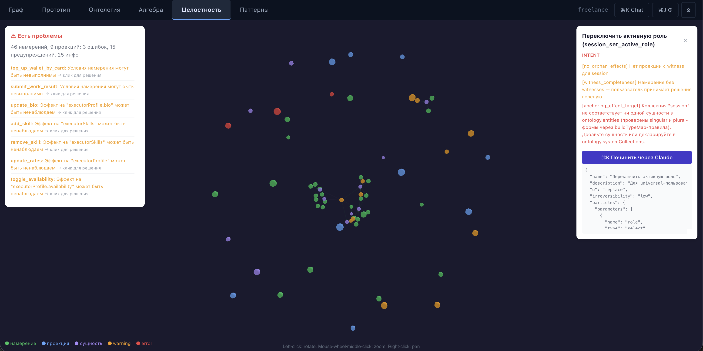

A formal system that derives applications from what users come to do. Pixels, voice, agent API, and document — rendered from the same intent model.
When is this available? Predicates on world state. Static or temporal.
What becomes true? The only substance of state. Add, replace, remove, batch.
What does the actor need to know? The human-readable dual of conditions.
What does the system need back? Click, text, form, or custom.
If a structure is computable from intentions and ontology, it is not an input — it is a derived artifact. Projections, algebra, four materializations, agent schemas, audit reports — all derived. 78% of screens emerge automatically across 9 domains.
Four UI adapters: Mantine, shadcn-doodle, Apple visionOS-glass, AntD enterprise-fintech. Capability surface, graceful fallback.
ProjectionRendererV2Speech-script with system · assistant · prompts turns. JSON for voice agents, SSML for TTS, plain text for IVR.
/api/voice/:domain/:projectionJWT-scoped REST with role taxonomy and declarative preapproval guards. LLMs become first-class users of the same intent model.
/api/agent/:domain/{schema,world,exec}Generic structured graph for catalog · detail · dashboard. Print-ready HTML, JSON for pipelines, regulatory exports.
/api/document/:domain/:projection

Entities / roles / references visualized with ownership and range highlights.

Projections render inline — crystallizer runs on every intent / ontology change.

Preview / Commit for 28 stable + 127 candidate patterns. Derived slots highlighted.

Claude haiku / sonnet / opus via subprocess. System prompt cached with >90% discount.

Four relations ▷ ⇌ ⊕ ∥ are derived from particles — not declared.

Six invariant kinds + integrity. Real-time status, graceful warnings instead of crashes.
Domain author enumerates user intentions in natural language. No screens, no endpoints — just what people come to do. Five particles per intent: conditions, effects, witnesses, confirmation.
Claude assists in extracting entities, predicates, role taxonomy. Author validates and corrects. Output: declarative intents.js, ontology.js.
78% of projections emerge from R1–R7 rules. Intent algebra (▷ ⇌ ⊕ ∥) inferred from particles. Agent schema, document graph, voice script — all derived from one ontology.
One artifact, four outputs. Pixels via UI adapter, voice via SSML, agent via REST, document via HTML. All viewer-scoped through filterWorldForRole.
Every effect has parent_id. Causal sort restores any chain. Schema-level invariants checked after every fold. Regulator gets the full audit through document materialization.
| Booking · 21 intents | ~3 days2 h |
| Reflect · 47 intents | ~5 days~3 h |
| Invest · 49 intents + 6 §26 closures | ~10 days1 day |
| Delivery · 45 intents + 3 paradigm additions | ~2 weeks~1 day |
| Sales · 223 intents (no ManualUI) | ~3 weeks~5 h |
| Boilerplate per domain | ~700 LOC~280 LOC |
idf init <domain> CLI (planned v0.3): < 10 min for scaffold + 80% generated.| Initial crystallization (14 intents) | ~10 k tokens |
| Full domain (52 intents) | ~50–60 k tokens |
| Incremental change (1 new intent) | ~80 ms re-derive |
| LLM enrichment (labels, icons) | ~2 k tokens |
| Total cost per domain · Haiku | $0.05 – $0.10 |
@intent-driven/core.UI is not what you draw. UI is the intersection of projections and intentions. Pixels, voice, agent API, document — equal materializations of that intersection.